本页是阶段7设计研究阶段的统一入口。三套方案均为独立、可运行的本地 HTML/CSS 预览原型，全部使用虚构模拟数据，未连接云数据库、未修改任何正式业务页面。点击每套方案下方的按钮即可打开完整交互原型（可在原型内切换 6 个页面）。
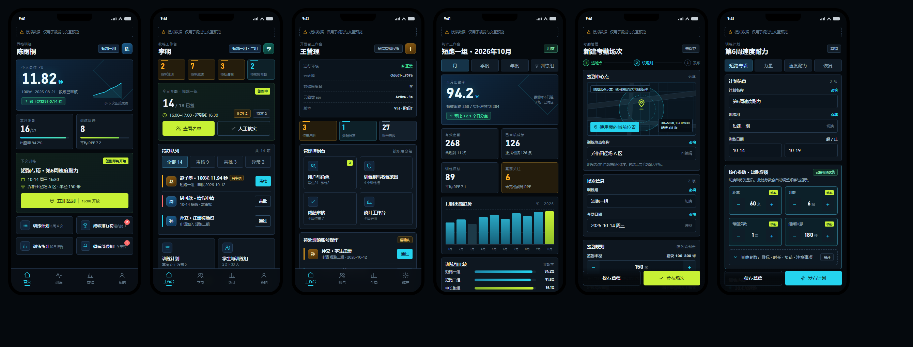
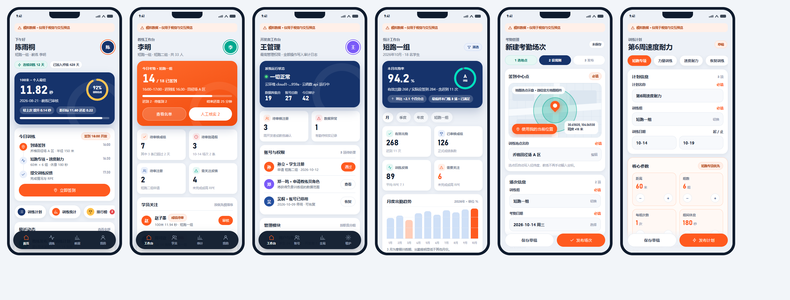
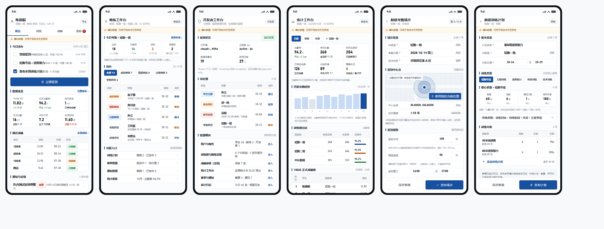
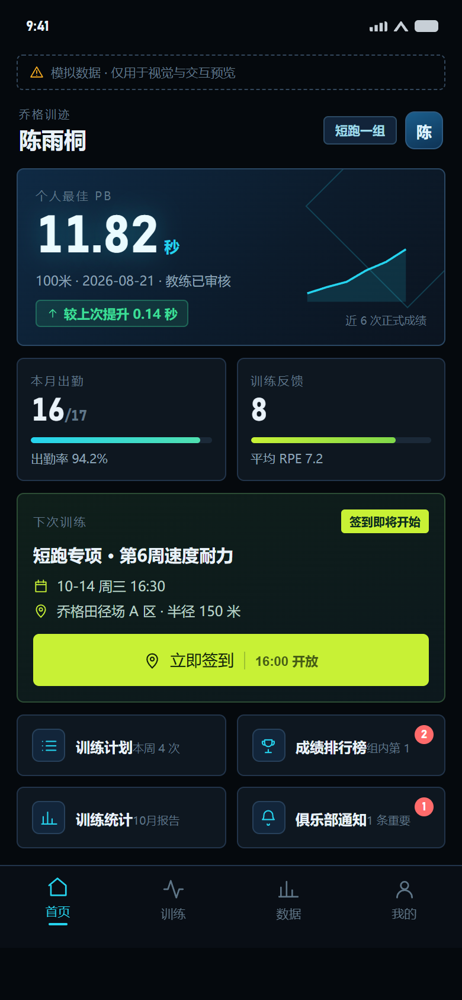
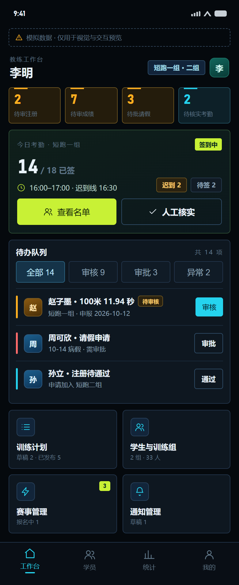
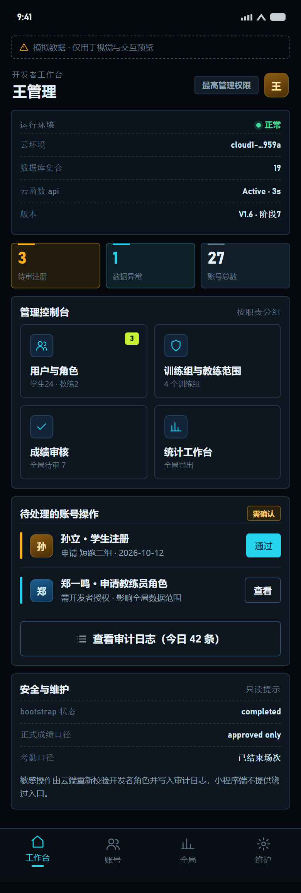
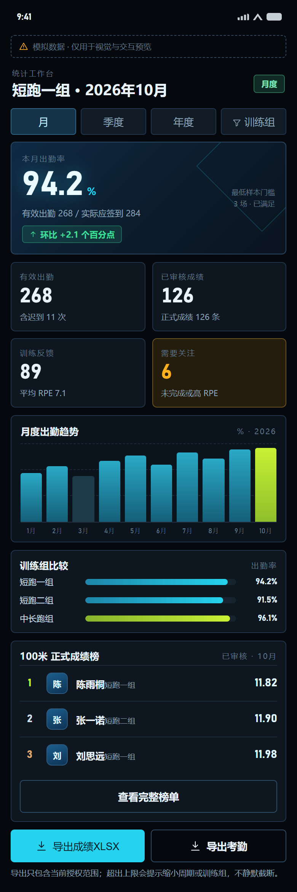
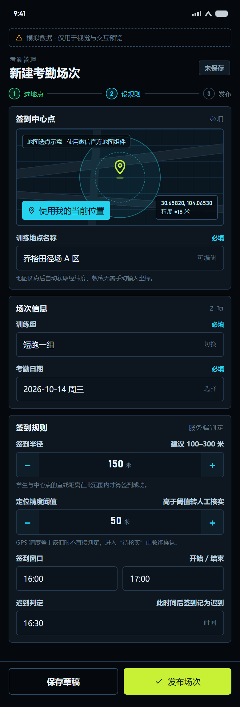
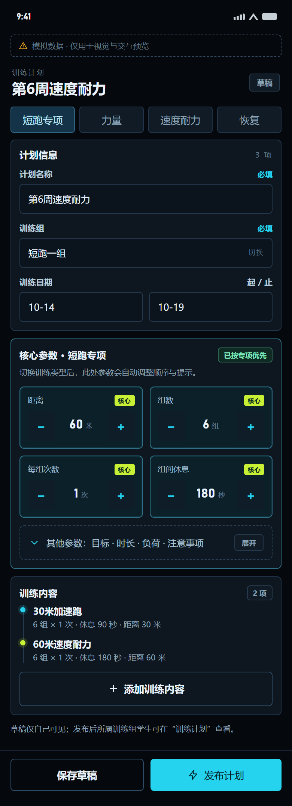
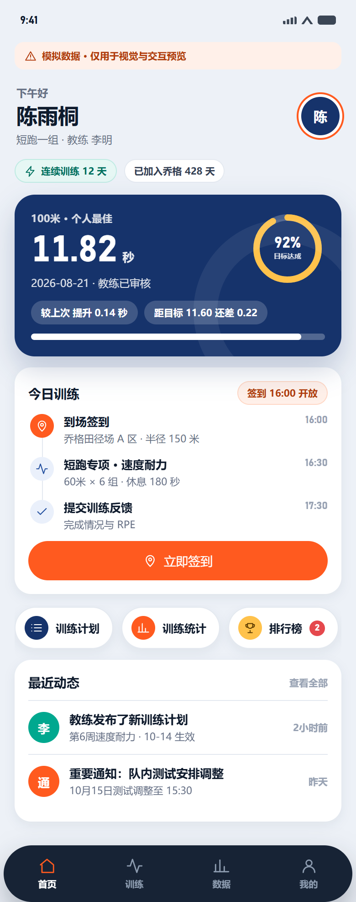
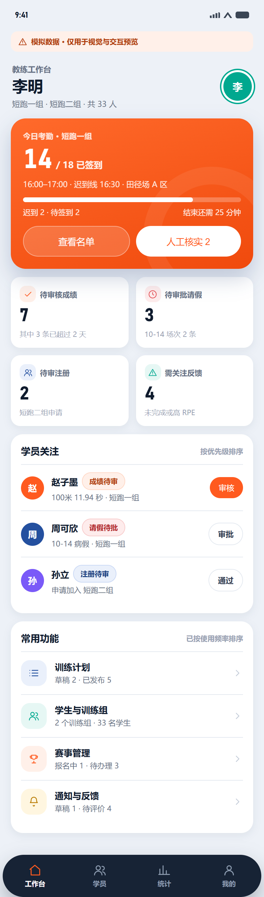
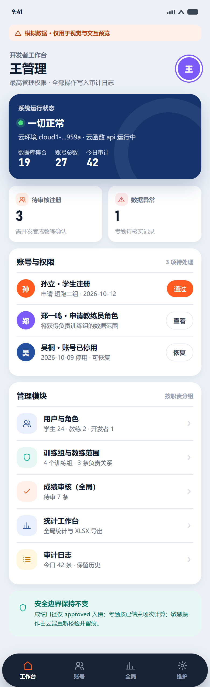
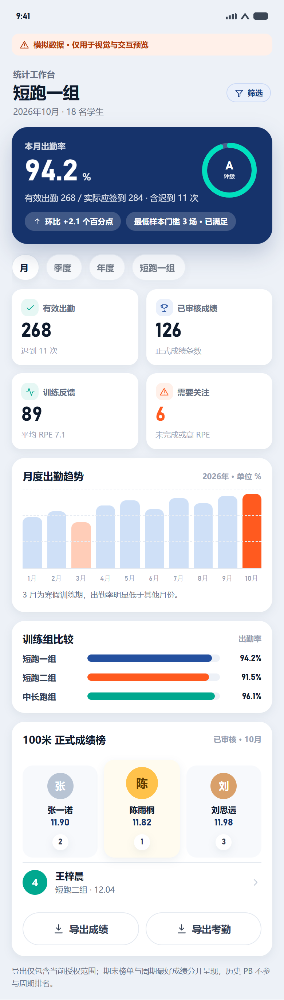
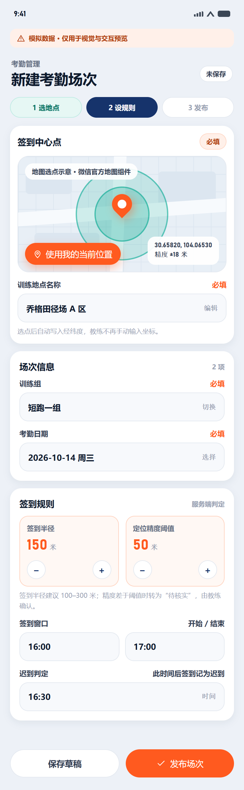
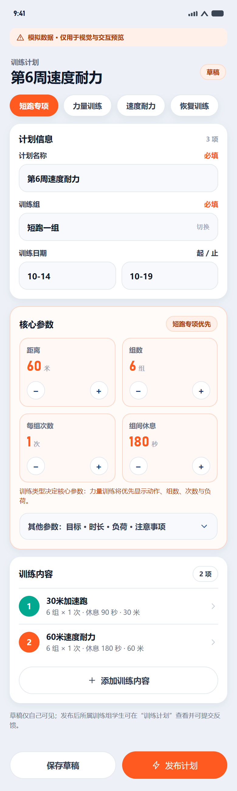
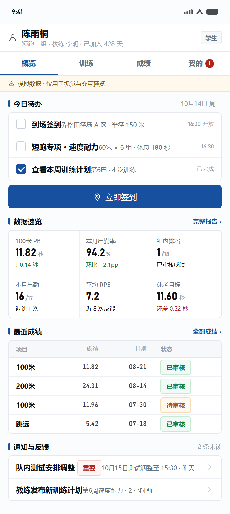
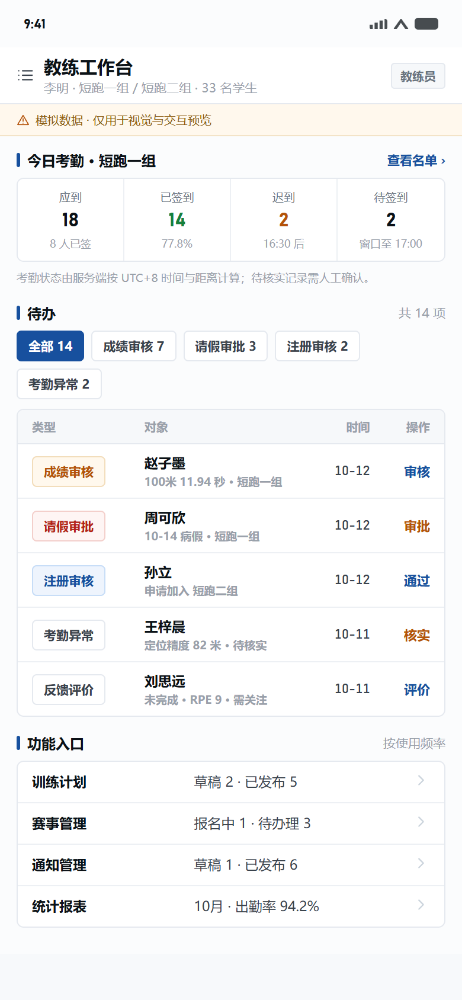
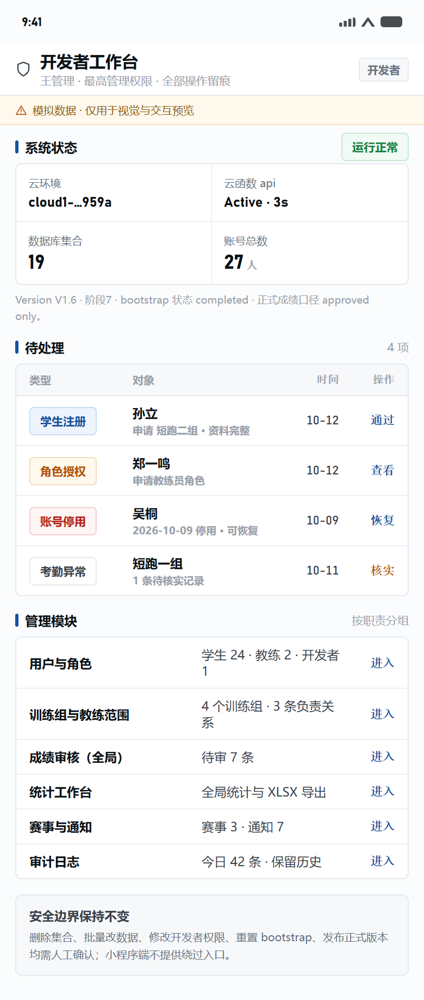
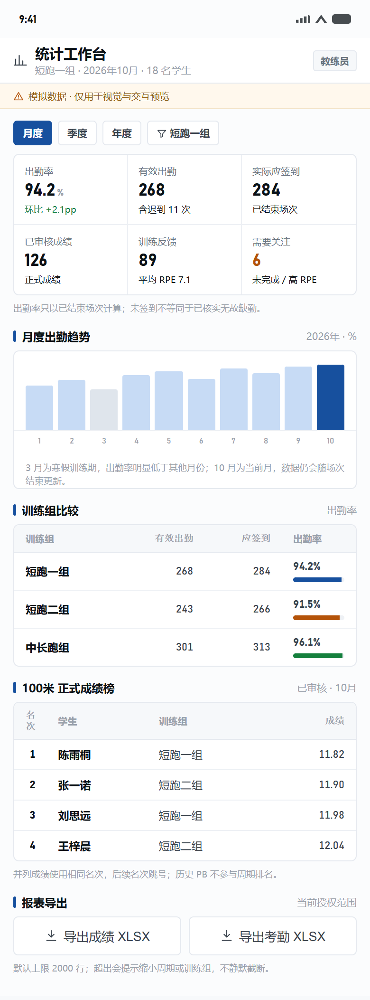
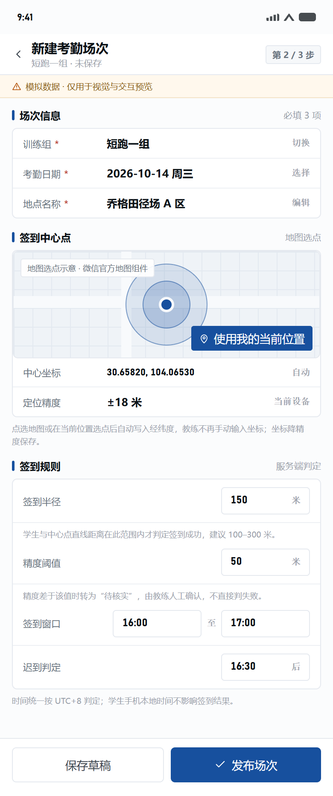
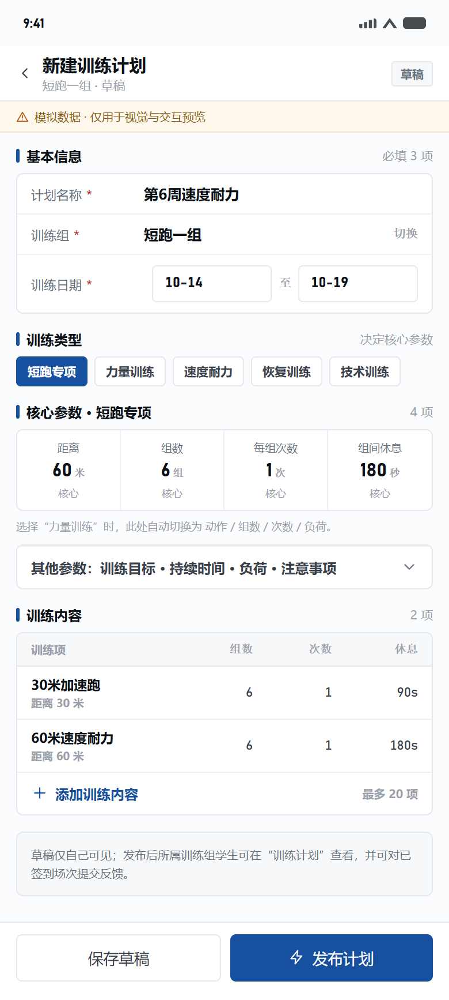
| 路径 | 内容 |
|---|---|
docs/ui-phase7/index.html | 本入口页，含三套方案总览与逐屏截图 |
docs/ui-phase7/A1-竞技科技/index.html | 方案 A1 可交互原型（6 屏切换） |
docs/ui-phase7/A2-运动品牌/index.html | 方案 A2 可交互原型（6 屏切换） |
docs/ui-phase7/A3-极简数据/index.html | 方案 A3 可交互原型（6 屏切换） |
docs/ui-phase7/screenshots/A?*-00-gallery.png | 每套方案 6 屏手机总览（带机身） |
docs/ui-phase7/screenshots/A?-0N-*.png | 单屏首屏截图（390×844，2 倍图） |
docs/ui-phase7/screenshots/A?-full-0N-*.png | 单屏整页长图（完整内容） |
docs/ui-phase7/阶段7_UIUX设计研究与视觉方案评估.md | 设计研究、方案对比、实施顺序与验收标准 |
打开方式：直接双击本文件或任一 index.html（默认浏览器即可，无需服务器、无需安装依赖、无需联网）。原型支持在页面顶部切换「全部 6 屏 / 学生首页 / 教练工作台 / 开发者工作台 / 数据统计 / GPS考勤表单 / 训练计划表单」共 7 个视图。